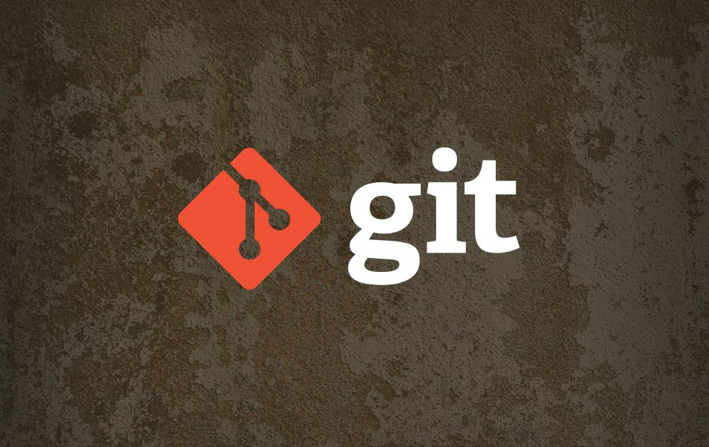

Levi9 :: git training
Vitaly Domnikov, @dotcypress
Vladimir Kirillov, @proger
Levi9 :: git training
Vitaly Domnikov,
@dotcypress
Vladimir Kirillov,
@proger

Agenda
Основы Git
Ветвление в Git
Распределённый Git
Git + Java
Git на сервере
Инструменты Git
Настройка Git
Git vs SVN
Git изнутри
Best practices
если проект большой и в 1 репе N компонентов -- то в одной ветке нельзя работать над 2+ компонентами
git clone --bare + много чекаутов для разных веток —-- лучше чем git stash
нельзя использовать git add . или -[Aa] :)
.gitignore для платформы
в фич-ветке история коммитов может отличаться до мержа
git submodules — говно
gitflow — не говно, рассказать про стратегии бранчевания
Основы Git
Создание Git-репозитория
Запись изменений в репозиторий
Просмотр истории коммитов
Отмена изменений
Работа с удалёнными репозиторями
Работа с метками
Ветвление в Git
Что такое ветка?
Основы ветвления и слияния
Управление ветками
Приёмы работы с ветками
Удалённые ветки
Перемещение
Распределённый Git
Распределённые рабочие процессы
Cтратегии ветвления
Gitflow
GitHub
Git + Java
ant - не серьёзно
maven
sbt / scala -- TODO
leiningen / clojure
submodules
Git на сервере
Протоколы
GitWeb
Gitosis
Gitolite
Git-хостинг
Инструменты Git
Выбор ревизии
Интерактивное индексирование
Перезапись истории
Отладка с помощью Git
Подмодули
Слияние поддеревьев
Настройка Git
Конфигурирование Git
Git-атрибуты
Перехватчики в Git
Пример навязывания политики с помощью Git
Git vs SVN
Git и Subversion
Миграция на Git
Git изнутри
Объекты в Git
Ссылки в Git
Pack-файлы
Спецификации ссылок
Протоколы передачи
Fork me on Github